※이 글은 AI(Claude 3.5 sonnet)에게도 만들어 달라고 해서 일부를 제가 직접 덧붙여 업데이트했습니다ㅎㅎ
2024년 6월에 먹었습니다. 이곳은 노포인 것 같은데, 2024년 6월 20일에 폐점한다는 걸 알고 마지막 기회에 찾아왔습니다!😄 현지에서 사랑받는 오키나와 소바 가게가 폐점하게 되어 아쉽네요.
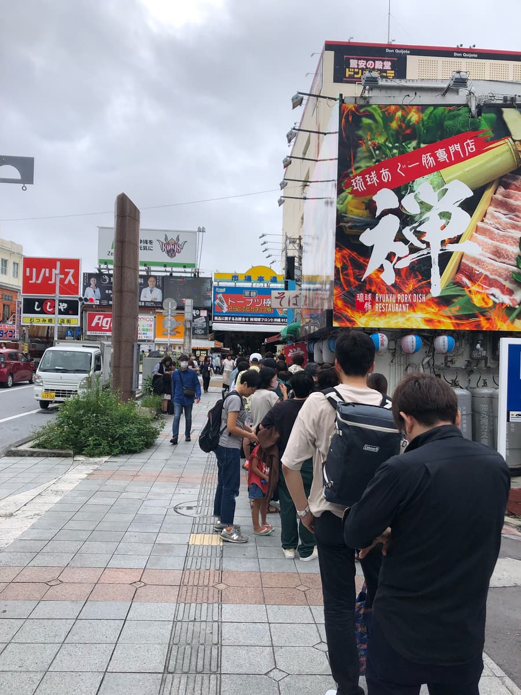
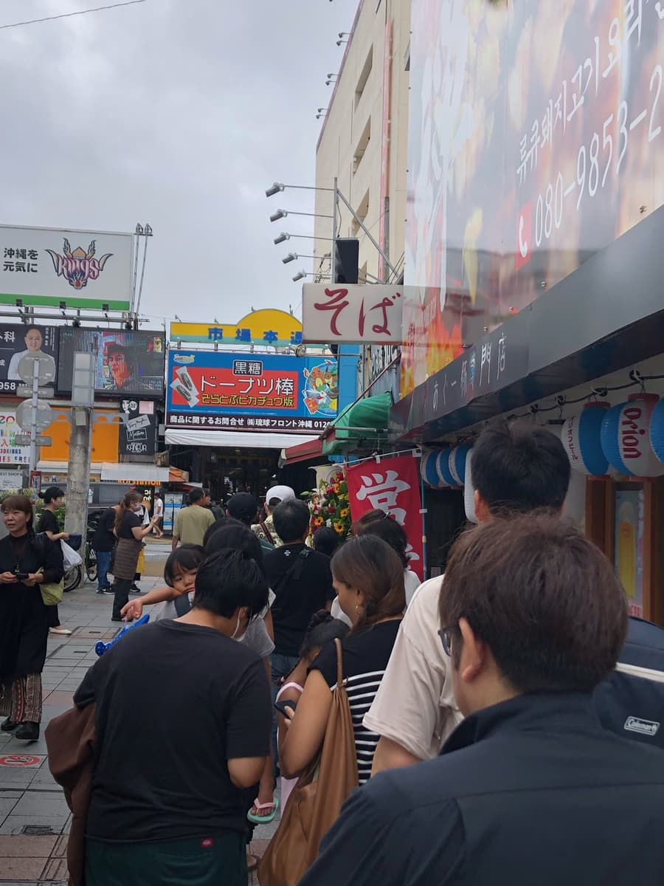
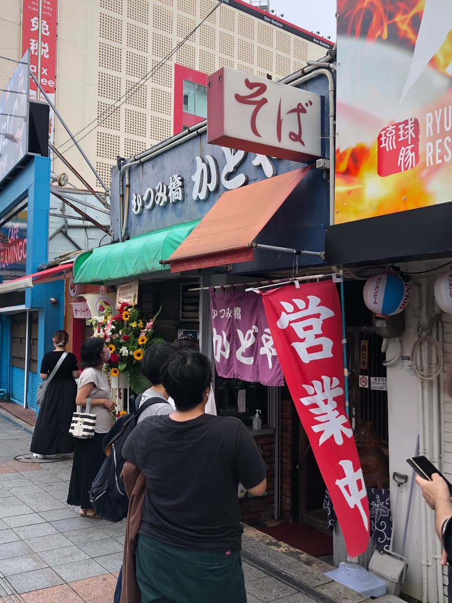
폐점하기 때문인지 꽤 긴 줄이 생겨 있었네요. 역시 계속 사랑받아 온 노포! 하지만 회전율이 좋아서 생각보다 빨리 먹을 수 있었습니다.
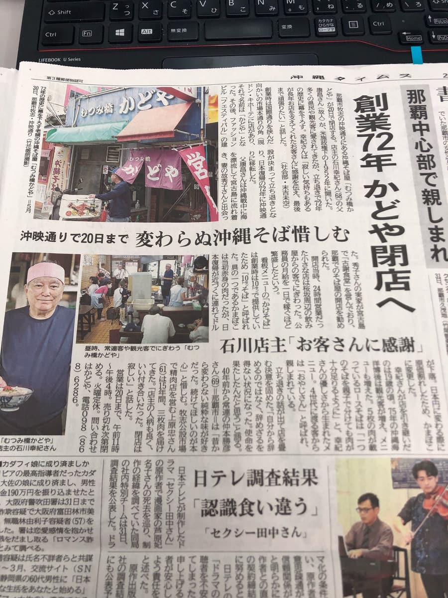
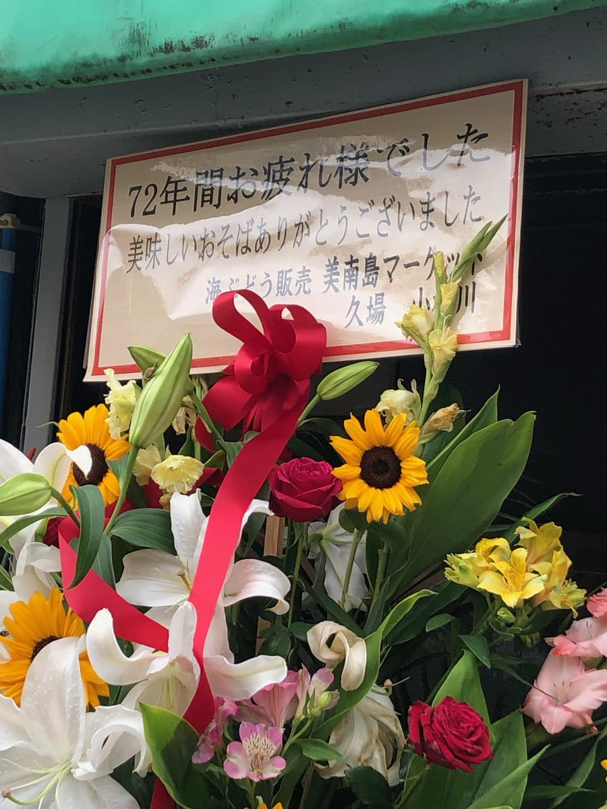
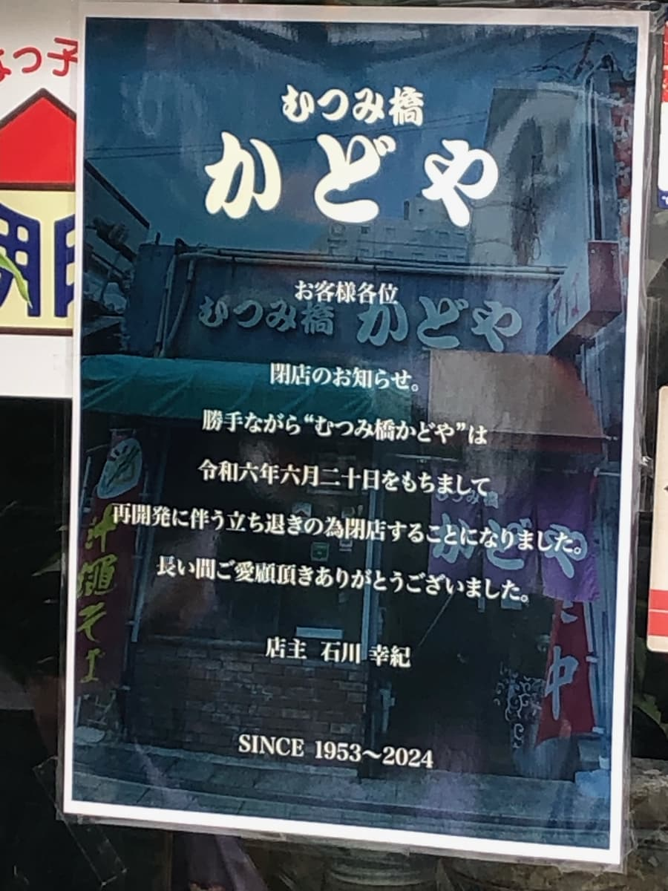
폐점 전에 카도야에서 먹을 수 있어서 다행이었습니다😄
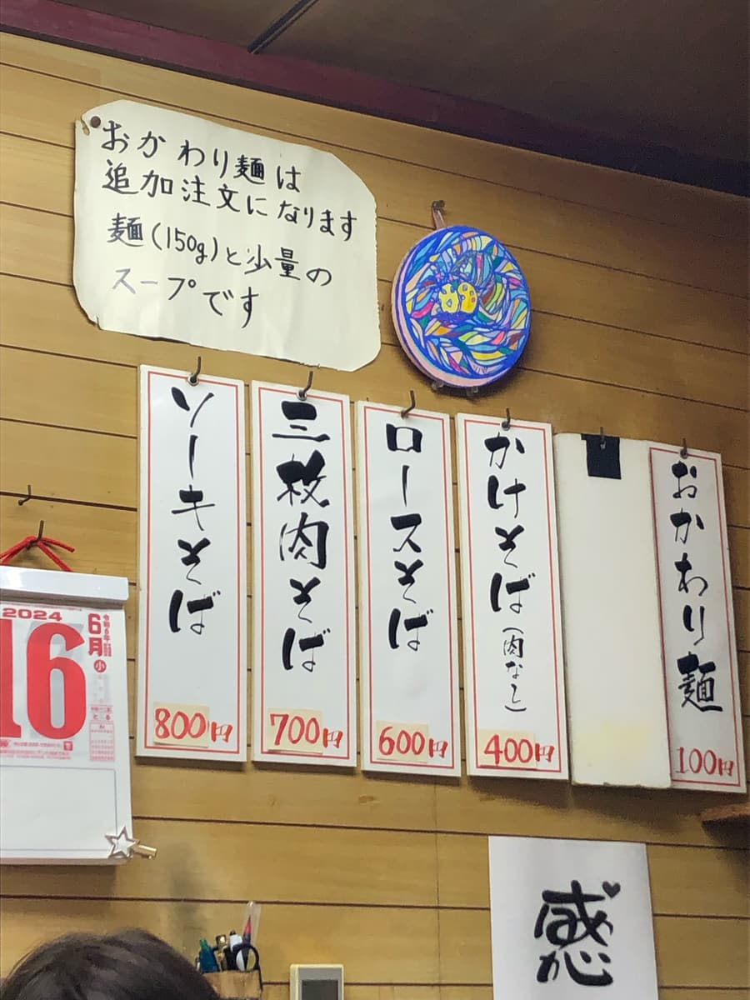
이번에는 메뉴판 중에서 “로스 소바”를 주문하기로.
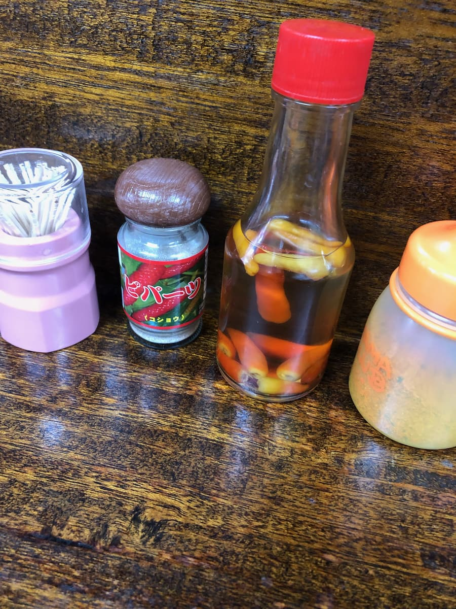
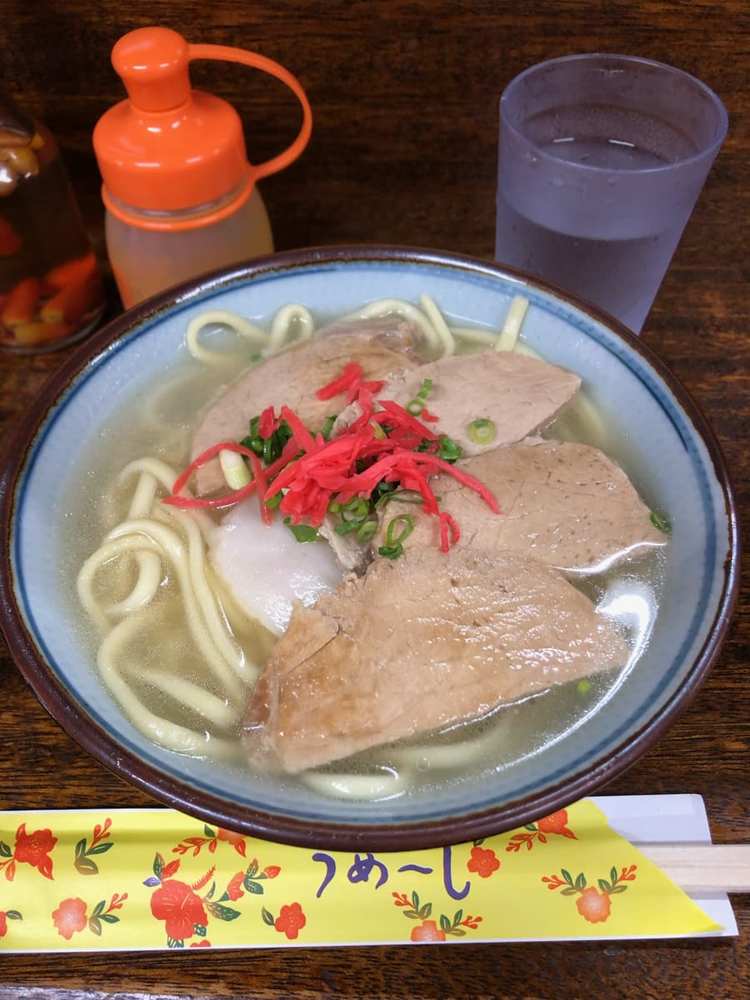
먼저 국물입니다. 돼지뼈 베이스의 순한 맛이 특징적이고, 너무 진하지 않은 담백한 맛입니다. 이것이 오랫동안 손님들에게 사랑받아 온 오랜 세월의 맛이네요😄
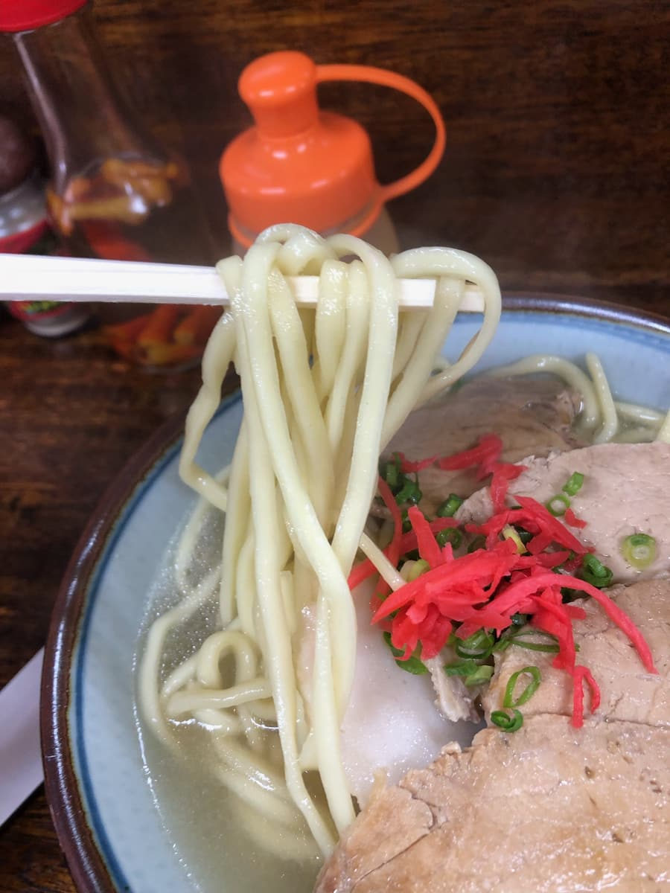
면은 중간 굵기의 스트레이트 타입을 사용하고 있습니다. 부드러운 편의 식감으로 국물과 잘 어우러집니다. 평범하게 맛있는 느낌이네요.
메인 고명인 로스 고기는 담백한 맛. 비계가 적은 편이라 산뜻한 식감입니다.
“무쓰미바시 카도야”의 오키나와 소바는 그야말로 정석 중의 정석. 화려함은 없지만 한 입 먹으면 “아아, 이게 바로 오키나와 소바!”라는 느낌이네요.
오랜 세월의 사랑, 관광객분들에게도 현지 분들에게도 폭넓게 사랑받는 것도 납득이 갑니다.
폐점이 정해졌다고 해서, 마지막으로 먹을 수 있어서 정말 다행이었습니다. 70년 이상의 역사에 막을 내리는 이 가게, 오키나와 소바계의 중요한 한 페이지를 장식한 것은 틀림없습니다.
게다가 폐점 기념 카드도 받았습니다ㅎㅎ 조금 레어템일지도? 메루카리에서 비싸게 팔리지 않을까~ 하는 생각까지 해 버렸습니다(웃음)
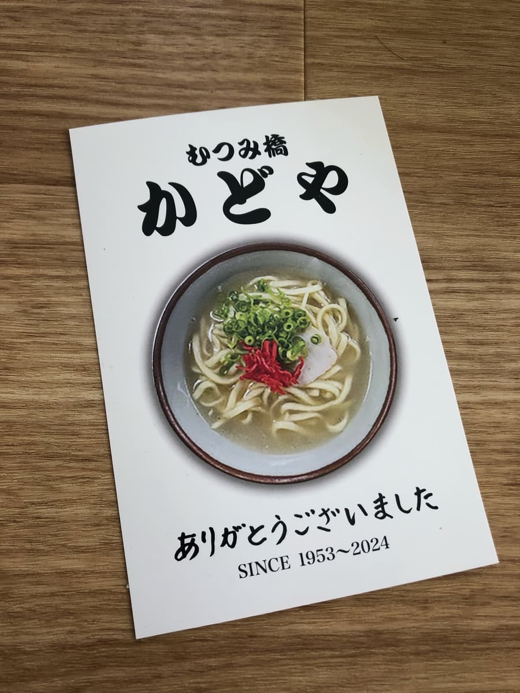
평가(9점/15점): 평범하게 맛있는 느낌이었지만, 폐점하기 전에 카도야에서 먹을 수 있어서 다행이었습니다. 감사했습니다.
면: ★★★☆☆（3）
수프: ★★★☆☆（3）
토핑: ★★★☆☆（3）